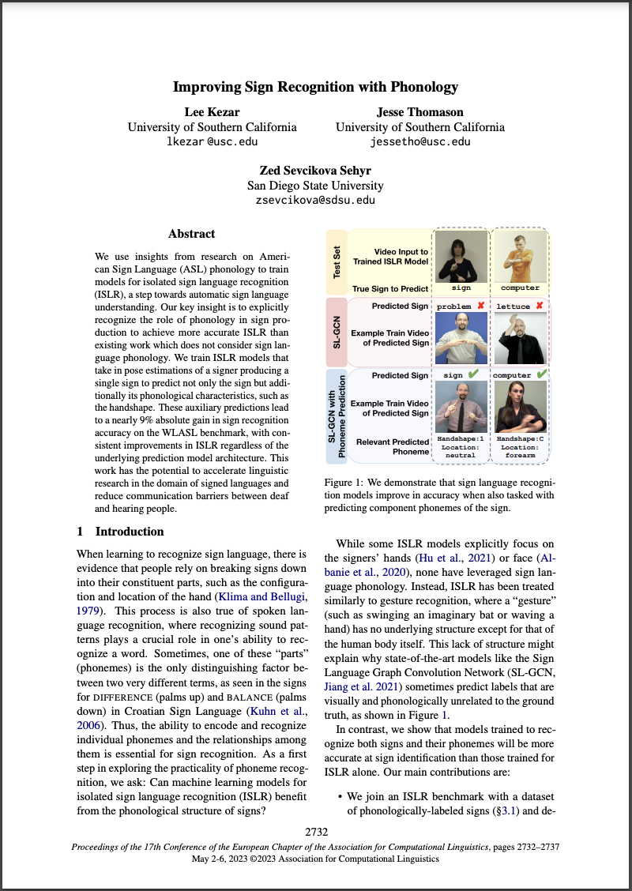
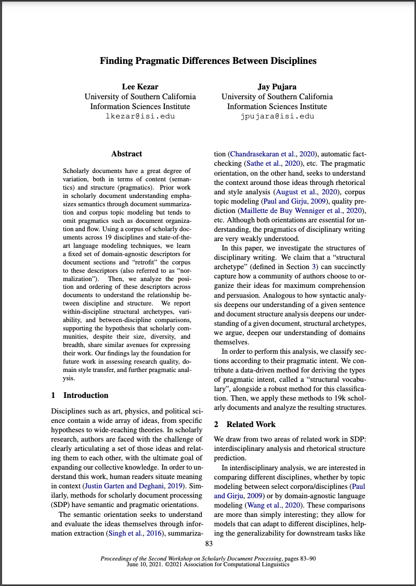

Research Agenda
As language technologies like ChatGPT gain popularity, users who are most comfortable communicating with a sign language are increasingly left behind. To help make these technologies more accessible, I use to make models that can . My current work focuses on , leveraging to improve model , , and .
Understanding any sign language requires visual features like the location and configuration of the hands, what those features signify, and
the intended meaning through inference.
To satisfy these requirements, I adopt a approach.
My work presents the argument that a model which can recognize phonological features not only recognizes isolated signs more accurately, but also enables it to approximate the meaning of signs it has never seen before!
Understanding sign language begins with perceiving many subtle visual features called , for example the flexion of each finger or the path that the hands move along.
Our EACL paper shows that models miss many of these features, leading to poorer performance in higher-level tasks like recognizing signs.
To improve models' phonological perception, a follow-up work
provides a method which recognizes 16 types of phonological features with 75%-90% accuracy using a technique called curriculum learning.
Recognizing which sign(s) are present in a video is a critical step towards automatic sign language translation and requires distinguishing many visually-similar signs.
This is a difficult task for rare and modified signs, which are unlikely to have been seen in training.
Our paper, showed that models are better at distinguishing signs when they can also recognize the pieces of those signs, i.e. .
This result was replicated in , adding that rare signs benefit the most from phoneme recognition.
One powerful benefit of modeling sign language is the ability to apply inference to the phonemes after they are recognized.
Specifically, by leveraging systematic relationships between form and meaning, we may be able to infer the meaning of a sign even if the model has never seen it before!
Ongoing work explores this possibility, which we intend to publish in 2024.
Sign languages are comparable spoken languages in almost every way.
Each sign language has its own vocabulary and grammar, and they are independent of any spoken language used in their region.
They have a complex structure at all levels, such as and .
My work leverages the relationship between phonology and semantics, also known as systematicity, to help machine learning models understand signs they haven't seen before.
Phonemes are the smallest units of language.
In sign languages, phonemes fall into one of several categories, such as hand configuration, movement, and location.
My work loosely falls under Brentari's Prosodic Model, which emphasizes the simultaneity and interdependency of phonemes.
Many times, the meaning of a sign has a direct relationship to its form.
This relationship, called systematicity, provides valuable scaffolding to learn signs more efficiently and can enable understanding even when the sign has never been seen before.
Currently, my team is working on a large knowledge graph of ASL signs' form and meaning, which we will be releasing in Fall 2024.
We hope this resource will be used in creative ways to computationally model ASL systematicity.
Structured, accurate knowledge about the structure of signs can be a powerful addition to current models for sign language.
For example, training models to simultaneously recognize phonological features alongside sign identifiers improves their accuracy at both tasks.
My work relies on knowledge bases like ASL-LEX 2.0, a dataset of linguistic and cognitive facts related to signs, and Empath, a dataset of semantic categories for many English words.
We've also released a dataset of our own, , containing over 91,000 isolated sign videos representing a vocabulary of 3,100 signs (the largest of its kind!).
Publications
2023
The Sem-Lex Benchmark provides 91,000 isolated sign videos for the tasks of recognizing signs and 16 phonological feature types.
Sign language and translation technologies have the potential to increase access and inclusion of deaf signing communities, but research progress is bottlenecked by a lack of representative data. We introduce a new resource for American Sign Language (ASL) modeling, the Sem-Lex Benchmark. The Benchmark is the current largest of its kind, consisting of over 84k videos of isolated sign productions from deaf ASL signers who gave informed consent and received compensation. Human experts aligned these videos with other sign language resources including ASL-LEX, SignBank, and ASL Citizen, enabling useful expansions for sign and . We present a suite of experiments which make use of the linguistic information in ASL-LEX, evaluating the practicality and fairness of the Sem-Lex Benchmark for isolated sign recognition (ISR). We use an SL-GCN model to show that the phonological features are recognizable with 85% accuracy, and that they are efective as an auxiliary target to ISR. Learning to recognize phonological features alongside gloss results in a 6% improvement for few-shot ISR accuracy and a 2% improvement for ISR accuracy overall. Instructions for downloading the data can be found at https://github.com/leekezar/SemLex.
Slides Download BibTeX Download Sem-Lex
We train SL-GCN models to recognize 16 phonological feature types (like handshape and location), achieving 75-90% accuracy.
Like speech, signs are composed of discrete, recombinable features called . Prior work shows that models which can are better at , motivating deeper exploration into strategies for modeling sign language phonemes. In this work, we learn graph convolution networks to recognize the sixteen phoneme"types"found in ASL-LEX 2.0. Specifically, we explore how learning strategies like multi-task and curriculum learning can leverage mutually useful information between phoneme types to facilitate better modeling of sign language phonemes. Results on the Sem-Lex Benchmark show that curriculum learning yields an average accuracy of 87% across all phoneme types, outperforming fine-tuning and multi-task strategies for most phoneme types.
Slides Download BibTeX
We show that adding phonological targets boosts sign recognition accuracy by ~9%!
We use insights from research on American Sign Language (ASL) to train models for (ISLR), a step towards automatic sign language . Our key insight is to explicitly recognize the role of phonology in sign production to achieve more accurate ISLR than existing work which does not consider sign language phonology. We train ISLR models that take in pose estimations of a signer producing a single sign to predict not only the sign but additionally its phonological characteristics, such as the handshape. These auxiliary predictions lead to a nearly 9% absolute gain in sign recognition accuracy on the WLASL benchmark, with consistent improvements in ISLR regardless of the underlying prediction model architecture. This work has the potential to accelerate linguistic research in the domain of signed languages and reduce communication barriers between deaf and hearing people.

Slides Poster Download BibTeX
2021
We classify sections in scholarly documents according to their pragmatic intent and study the differences between 19 disciplines.
Scholarly documents have a great degree of variation, both in terms of content (semantics) and structure (pragmatics). Prior work in scholarly document understanding emphasizes semantics through document summarization and corpus topic modeling but tends to omit pragmatics such as document organization and flow. Using a corpus of scholarly documents across 19 disciplines and state-of-the-art language modeling techniques, we learn a fixed set of domain-agnostic descriptors for document sections and “retrofit” the corpus to these descriptors (also referred to as “normalization”). Then, we analyze the position and ordering of these descriptors across documents to understand the relationship between discipline and structure. We report within-discipline structural archetypes, variability, and between-discipline comparisons, supporting the hypothesis that scholarly communities, despite their size, diversity, and breadth, share similar avenues for expressing their work. Our findings lay the foundation for future work in assessing research quality, domain style transfer, and further pragmatic analysis.

Download BibTeX